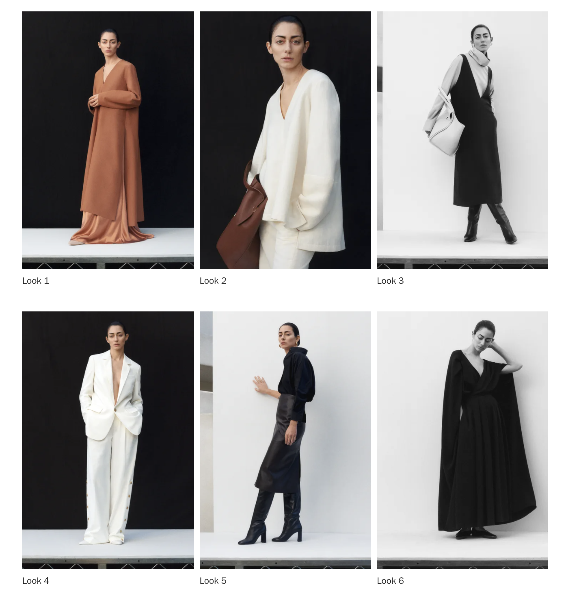

YOU GOT
CO: Pre-Fall 2020

THE BACKGROUND
Monastic silhouettes have been an ongoing theme at Co, with satin slips and crisp shirtdresses blown up big and worn under tunics and cozy knits. This season Danan and Kern added all-enveloping shawl scarves with cozy pockets to their roster, a clever spin on the idea of transitional layering. Tailoring has been in the spotlight at the brand lately too; the duos new suits came with subtle revisions, belted at the waist or buttoned up the leg. One brown leather trench coat was cut along the same slim-fitting line and had a retro elegance that felt right for now.